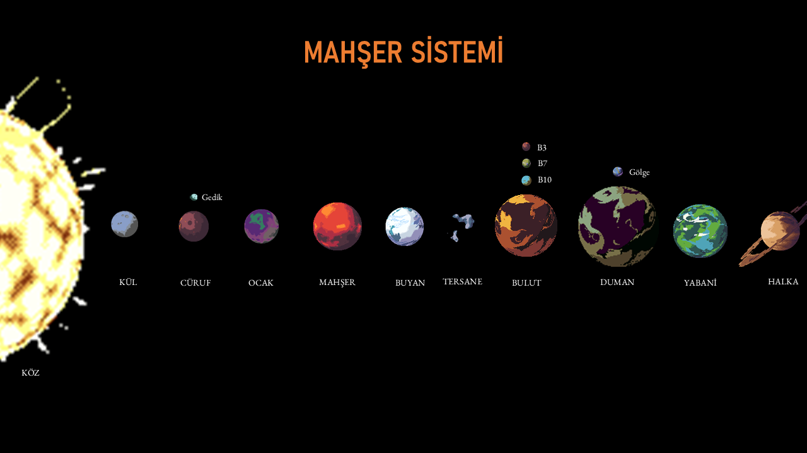
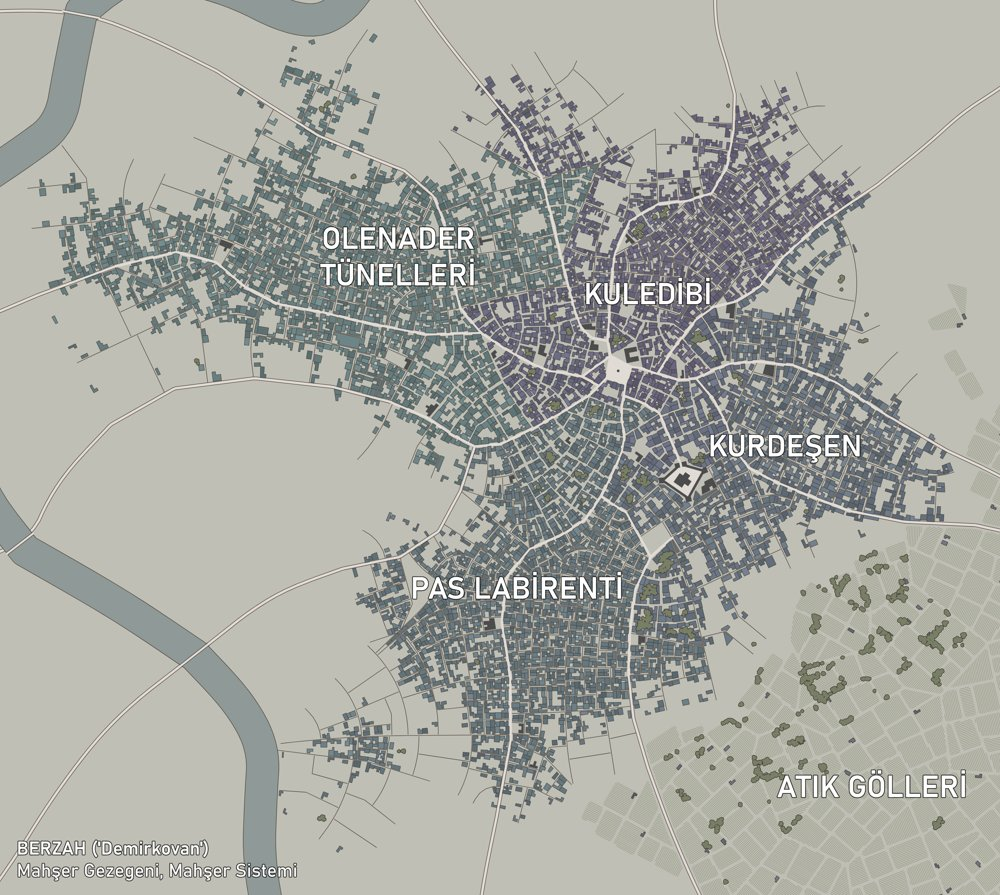

Sistem Haritası

| # | Gezegen | Tür | Birincil Önem |
|---|---|---|---|
| — | Köz | Yıldız (yaşlı turuncu dev) | Sistemin merkezi |
| 1 | Kül | Ölü dünya | Navigasyon referansı |
| 2 | Cüruf | Ölü dünya (Ay: Gedik) | Kara Ælf labirent kapısı |
| 3 | Ocak | Madencilik dünyası | Genuğru Tarikatı kökeni, Ork baskınları |
| 4 | Mahşer | Kovan / Sanayi dünyası | Birincil çatışma bölgesi, Duat mezarları |
| 5 | Buyan | Buz dünyası | Rahibe tapınağı; Tiān gözlem noktası |
| 6 | Tersane | Donanma tesisi | İmparatorluk tesisi, kısmen yozlaşmış |
| 7 | Bulut | Gaz devi (14 ay) | Tiān izleme istasyonları |
| 8 | Duman | Gaz devi (Ay: Gölge) | Hünerdiyar Ael-Daris gizli karakolu |
| 9 | Yabani | Orman dünyası | Ælf bakir dünyası, kadim dünya, Tiranid iniş yeri |
| 10 | Halka | Halkalı gaz devi | Dış sınır; Duat filosu, Tiranid girişi |
Yıldız: Köz
Mahşer Sistemi'nin merkezinde Köz bulunur: yaşlı, yavaşça şişen, solgun turuncu bir dev yıldız. Yaklaşık on milyon yıl içinde ölecektir; yetkililerin bunu umursamasına gerek yoktur, çünkü sistemdeki diğer sorunlar çok daha acildir.
Köz'ün adı eski bir Teknorahiplik katalog referansından bozulmuştur; artık sadece "kor, köz ateş" anlamına gelen bu kelimeyle anılır. Işığı kırmızımsı turuncudur ve sistemdeki her gezegenin gökyüzüne eski kan rengi verir.
Sistemin Gezegenleri
1. Kül Ölü Dünya
Sistemin en iç gezegenidir. Köz'ün yakınlığı onu tamamen sterilize etmiştir: çıplak, siyah kaya, sıfır atmosfer, sıfır değer. Navigasyon haritalarında referans noktası olarak kullanılır. Başka bir işlevi yoktur.
2. Cüruf Ölü Dünya · Ay: Gedik
İkinci gezegen jeolojik açıdan dengesizdir. Yüzeyi kırık fay hatları ve yarı aktif volkanik bölgelerle kaplıdır; büyük çaplı bir silah atışı bu gezegenin bütünlüğünü tehlikeye atabilir. Küçük ayı Gedik ise görünürde tamamen anlamsız bir kaya parçasıdır. Görünürde.
Gedik'in derinliklerinde, Yarılan Ay Kabalı'nın üç asırdır kullandığı gizli bir Labirent kapısı mevcuttur. Bu kapı, Kara Elf korsanlarının Mahşer Sistemi'ne sessizce girmesini ve çıkmasını sağlar. İmparatorluk bu kapıdan habersizdir. Kabal ise bu cehaletin sürmesini titizlikle sağlar.
3. Ocak Madencilik Dünyası
Üçüncü gezegen, Teknorahiplik gözetiminde işletilen zorlu bir sınai madencilik kolonisidir. Yüzey sıcaklıkları insan yaşamı için son derece ağırdır; işçiler zırhlı yeraltı tesislerinde ve orbital istasyonlarda barınır. Ocak, Mahşer'in ocakmabetlerine ham madde ve yakıt sağlar; sistemin ekonomik omurgasının sessiz, ihmal edilmiş parçasıdır.
Ocak'ın en derin madencilik tünellerinde, Sonsuz Kurtun Cemaati adlı Genuğru Tarikatı iki yüzyıldır büyümektedir. Melez bireyler madenci loncalarına, Teknorahiplik teknisyenlerine ve yönetim kademelerine sızmıştır. Şeyh uykudadır ve beklemektedir.
Ork korsanları da zaman zaman Ocak'ın yörünge istasyonlarına baskın düzenler. Bu baskınlar düzensiz ve kanlıdır ama şimdiye kadar hep püskürtülmüştür. Şimdiye kadar.
4. Mahşer Sanayi Dünyası
Dördüncü gezegen. Sistemin kalbi. Milyarlarca nüfus barındıran altı dev kovanketten oluşur; bunlardan en büyüğü, kıtasal ölçekte bir sanayi kompleksinin üzerine kurulmuş Demirkovan'dır. Mahşer'in ocakmabetleri, altsektör genelinde lazer tüfekleri, tank gövdeleri, topçu mühimmatı ve fezagemisi bileşenleri üretir.
Gezegenin yüzeyi küle dönmüş çöller, asit yağmuru ormanları ve zehirli okyanuslardan ibarettir; insan yaşamı yalnızca kovan şehirlerin içinde mümkündür.
Demirkovan'ın en eski bölümlerinin temellerinin kilometrelerce altında, Mahşer Hanedanı uyumaktadır; altmış milyon yıl önce bu dünyayı ilk inşa eden Duatların kadim mezarlıklarından oluşan bir ağ. İmparatorluk, kovankentlerini tam anlamıyla bir Duat altyapısının üzerine inşa etmiştir ve bundan hiç haberi olmamıştır.
997.M41'de protokol tamamlandı. Mezarlar açıldı.
Demirkovan'ın Demirden Kovanaltı
Gezegenin birincil çatışma bölgesi. Binlerce yıllık çökmüş fabrikalara, taşkın jeneratörlere, zehirli atık göllerine ve hiçbir haritada bulunmayan eski geçit ağlarına ev sahipliği yapar. Artık her köşeden farklı bir şey çıkar.

5. Buyan Buz Dünyası
Beşinci gezegen soğuk, uzak ve yüzeyinde küçük bir İmparatorluk Tapınağı saklı olmasa, büyük ölçüde önemsiz kabul edilebilir. Alev Azizesi Oleander'ın Emanethanesi, iki yüzyıldır Kızıl Damla Tarikatı tarafından korunmaktadır. Tesis küçüktür; bir kaç yüz muharip rahibe ve destek personelinden ibarettir. Ama manevi önemi muazzamdır.
Mahşer Sistemi'nin karışmaya başlaması ve Kaos Komandolarının varlığının doğrulanması üzerine Başrahibe Priyah, Buyan'daki garnizonunun büyük bölümünü aktif savaş operasyonlarına yönlendirmiştir. Tapınak boş değildir; ama eski halinin silik bir gölgesi kadar korunmaktadır.
6. Tersane İmparatorluk Donanması Tesisi
Altıncı dünya tam anlamıyla bir gezegen değildir: Köz'ün yeterince uzağında yörüngede dönen, birbirine kenetlenmiş istasyonlar ve iskele komplekslerinden oluşan devasa bir İmparatorluk Donanması tesisidir. Üç büyük izleme istasyonu Tersane'ye bağlıdır: Demir Üssü, Çelik Üssü ve Tunç Üssü.
Tunç Üssü altı ay önce sessizliğe büründü. Resmi kayıtlar "teknik arıza" diyor. Tahkikçi Vorn ise bu açıklamaya inanmıyor. Kaos tarikatçılarının Tersane'nin alt istasyonlarından birine sızdığına dair güçlü kanıtlar mevcuttur.
7. Bulut Gaz Devi · 14 Ay
Yedinci gezegen, Köz'ün soluk turuncu ışığında bant bant sarı-krem rengiyle görünen büyük bir gaz devidir. Fırtınaları Mahşer'den çıplak gözle görülebilir.
Ondört ayından üçü (Bulut-3, Bulut-7 ve Bulut-10) on beş yıldır aktif Tiān izleme tesislerine ev sahipliği yapmaktadır. Bu tesislerin varlığını İmparatorluk henüz tespit edememiştir.
Sa'cea Eyaletinden Esîri Kor'el Sha'is, Mahşer Sistemi'ni Ulu Amaç kapsamında değerlendirmiştir ve yavaş bir entegrasyon süreci planlamaktadır.
8. Duman Gaz Devi · Ay: Gölge
Sekizinci gezegen daha küçük, daha karanlık ve daha az çarpıcıdır.
Tek büyük ayı Gölge, kalın bir buz tabakasıyla kaplıdır ve bu buz tabakasının altında Hünerdiyar Ael-Daris Ælflerinin gizli bir ileri karakol tesisi bulunmaktadır. Ael-Daris Ælf başkahinleri buradan Mahşer Sistemi'ni on yıllardır izlemiştir: Mahşer Hanedanı'nın uyanışını tahmin etmişler, engellemeye çalışmışlar ve başarısız olmuşlardır.
Başarısızlık hünerdiyarı ikiye bölmüştür. Bir kanat, asıl tehdidin Duatların olduğunu savunur. Öbür kanat, Yabani gezegenindeki daha eski şeyin çok daha önemli olduğunu düşünmektedir.
9. Yabani Orman Dünyası (Kadim Dünya)
Dokuzuncu gezegen, İmparatorluk haritalarında "ıssız, değersiz, biyolojik açıdan ilgi çekici" şeklinde geçer. Yüzeyi yoğun ormanlarla kaplıdır; bazı bölgelerde bitki örtüsünün üst katmanlarından geçen ışık bile yoktur.
Bu sapmaların nedeni Hünerdiyar Ael-Daris Ælfleridir. Yabani, Ael-Daris'in dört bin yıldır koruduğu bir bakir dünyadır. Yabani'nin en derin orman tabanlarının altında, Duatların bile unuttuğu daha eski bir şey gömülüdür. Alacalar bu şeyin farkındadır. Başkahinler bu şeyden korkmaktadır.
10. Halka Halkalı Gaz Devi
Onuncu ve son gezegen, sistemin dış kenarında döner. Halkaları devasa mühimmat ve mayın alanına dönüştürülmüştür. Tiranid kopma yığını Halka'nın çevresinden gelerek sisteme girmiştir; Duat oniks gemilerinden oluşan küçük bir filo ise Halka'nın gölgesinde sessizce beklemektedir.
Mahşer Krizi
Kriz zincirleme gerçekleşmiş bir dizi felakettir. Tek bir nedeni yoktur. Her şey yüzyıllar önce, farklı zamanlarda ve farklı ellerde kurulmuş domino taşlarının birer birer düşmesinden ibarettir.
Genuğru Tarikatı, Ocak'ın derinliklerinde kök salmaya başladı. Şeyh'in ilk nesli doğdu.
Sa'cea Sept, Bulut'un aylarına izleme tesisleri kurdu. Esîri Sha'is, Mahşer'in entegrasyonu için on yıllık plan hazırladı.
Düşkün Hükümran sisteme girdi. İblis Prens Morthax'ı çağırmak için Kovanaltı'nda ritüel hazırlıklara başladı.
Kara Ælf baskın ekipleri sistemde alışılmadık miktarda yüksek değerli av tespit etti.
Bir Tiān izleme sondası, Mahşer'in altından yükselen açıklanamayan ısı belirtiler kaydetti.
Mahşer Hanedanı'nın protokolü tamamlandı. Mezarlar açıldı. İlk temas ekibinin büyük bölümü dönemedi.
Tahkikçi Thessaly Vorn sisteme vardı. Takviye istedi.
Kopma Yığın Nagaia dış kenara ulaştı. Morthax somutlaşmaya başladı. Bozfarisler çağrıldı.
Her büyük güç sisteme girmiştir. Çoğu diğerlerinden habersizdir. Hepsi infaz timlerini gönderir.
Taraflar
Uzay Komandosu İzcileri
Yavaş ve garantici bir kapituldur; geniş çaplı saldırıdan önce istihbarat toplamayı tercih eder. Kapitul Üstadı Daveth Krael izci bölüklerini sisteme dağıtmıştır. İzci-Rahip Müfettişi Tyrus operasyonları koordine eder.
İmparatorluk Muhafızları
3. Alay yirmi yıldır yalnızca Demirkovan'ın kovanaltında görev yapar. Oradaki her çökmüş fabrikayı ezbere bilirler. Çavuş Ayla Demirci birinci kıdemli infaz timini yönetir. Duatlar ilk göründüğünden bu yana tam bir gece uyumamıştır.
Ork Veletleri Güruhu
Uzay gemisi enkazı Evrenin Yumruğu yirmi üç yıl önce parçalandı. Cenkbeyi Nemrutdiş ve binlerce Ork fezaya saçıldı. Şimdi Duman'ın bir ayında köhne bir asteroid kalesi işletiyorlar ve hurda mekiklerle Kovanaltı'na dalıyorlar. Nemrutdiş bunu Mahşer tarihinin en iyi dövüşü olarak nitelendiriyor.
Muharip Rahibeler
Başrahibe Priyah Kaos Komandolarının varlığı doğrulandığında görevini genişletmekte bir an bile tereddüt etmedi. İnfaz timleri Kovanaltı'nda hem Kaos müritleriyle hem de Genuğru Tarikatının melezleriyle çatışıyor.
Kaos Komandoları
Değişim İlahı'nı Kelam Taşıyanların ibadet şekli üzerinden yorumlayan sapkın bir kol. İnfaz timleri Kovanaltı'nda savaşmak için değil, yerleştirmek için vardır: iblis mürekkebiyle çizilmiş ayin işaretleri, ark rezonatörleri, bozulmuş servitorlar. Kara Havari Soraven konuşmaz. Sesinin sıradan kulaklar için çok tehlikeli olduğunu söylüyor.
Kara Ælfler
Gedik'teki labirent kapısı üç yüzyıllık arka kapılarıdır. Aktif infaz timleri Kanlı Sınır Cadı Meclisi'ne aittir: dövüşü tiyatro olarak gören akrobatik katiller. Sukkubus Ysariel karşılaştığı her taraftan bir hatıra eşyası toplamayı kişisel oyunu haline getirmiştir.
Hünerdiyar Ælfleri
Başkahinleri Mahşer Hanedanı'nın uyanacağını yüzyıllar önce görmüştür. On yıllarca ertelemeye çalışıp başarısız olmuşlardır. Başkahin Ithrandiel Sorn iki şeyi aynı anda arıyor: Alt-Kova'nın altındaki daha eski varlık ve Yabani'yi koruma.
Genuğru Tarikatı
İki yüz yıldır sabırlıdır. Şeyhleri Demirkovan'ın en derin bölümünde uyumakta ve büyük gemilerin gökyüzünden düşeceği anı beklemektedir. 4. Nesil Talebe Önderi Uthman-7 Kovanaltı'nın doğu su arıtma bölgesini kontrol eder.
Bozfarisler
Ordo Malleus beş Bozfaris gönderdi. İsimleri gizlidir. Sayıları beştir. Yeterlidir. Morthax'ın Kovanaltı'na yerleştirdiği altyapıyı sistemli olarak söküp imha ediyorlar.
Alacalar
Başka hiçbirinin anladığı nedenler için buradalar. Kırık Ayna Kumpanyası labirentte bir yol takip ediyor; Gedik kapısından geçen ve Kovanaltı'nın en eski bölümüne uzanan bir yol. Gölgekahin Maraviel bunu kimseyle paylaşmamıştır.
Engizisyon
Tahkikçi Thessaly Vorn on sekiz aydır sistemi incelemektedir. Genuğru faaliyeti arıyordu; bunun yerine aynı anda her şeyi buldu. İnfaz timi titizlikle seçilmiştir: Ölümgözcüleri geçmişli bir sorgucu, zenobiyoloji uzmanı iki yardımcı, eğitilmiş bir teknorahip, üç kıdemli Yıldırımordusu piyadesi ve eski bir Kara Ælf esiri.
Duatlar
Mahşer Hanedanı altmış milyon yıl önce bu dünyayı inşa etti. İnsanlar geldi, kendi şehirlerini tam da eski altyapının üstüne inşa etti. Bu Duatlar için bir ihlaldir. Firavun Szekhthar sabırsız bir komutan değildir. Ölümsüz infaz timleri tünelleri sistematik olarak temizliyor.
Teknokratlar
Başsahir Helve Drost (dört yüz yaşında, kırk yıldır biyolojik gözlerini kullanmayan) bu krizi tarihinin en önemli anı olarak görmektedir. Aktif Duat teknolojisi — fazteknoloji, kendini onarabilen metalik organizmalar. Drost örnekler istiyor. Mümkünse çalışır halde bir gauss-yüzer.
Tiān İmparatorluğu — Kaşifler
Plan basitti: gözlem, diplomatik temas, yavaş entegrasyon. Plan artık geçerli değildir; ama fırsat dönüşmüştür. Shas'ui Kael Rann ve Kaşif infaz timi Bulut-3 istasyonundan Mahşer'e inmiştir.
Tiranidler
Mahşer Sistemi'nin ürettiği psişik gürültü — eşzamanlı Kaos ayinleri, Duat uyanışı, Genuğru tarikatının sinyali — uzayda parlak ve kaotik bir işaret gibi görünür. Ana Yığın bilinci bu işareti duyar. Kopma yığın henüz küçüktür. Ama büyümektedir.
Ana Çatışma Bölgesi: Demir Kovanaltı
Demirkovan'ın Kovanaltı, on beş tarafın yakınsadığı birincil infaz noktasıdır.
Pas Labirenti
Çökmüş ağır sanayi enkaz alanı. Pusu için ideal.
Birincil tehdit: Ork Veletler, Genuğru Tarikatı
Atık Gölleri
Yüzyıllık kimyasal atık havuzları. Duatlar buradaki zemin çatlaklarından çıkıyor.
Birincil tehdit: Duatlar, İmparatorluk Muhafızları
Oleander Tünelleri
Eski hac güzergahları. Rahibeler bu koridorları kullanıyor; Kaos müritleri rezonatör yerleştiriyor.
Birincil tehdit: Kaos, Rahibeler
Kurdeşen
1 km genişliğinde çökmüş santral kubbesi. Cemaatin toplanma yeri. Şeyh üç kat aşağıda uyuyor.
Birincil tehdit: Genuğru Tarikatı, Tiranidler
Kuledibi
Kovanaltı'nın en eski bölümü. Kovan öncesi kalıntılar. Alacaların aradığı şey burada.
Birincil tehdit: Alacalar, Hünerdiyar Ælfleri
Dramatis Personae
| İsim | Taraf | Rol |
|---|---|---|
| Tahkikçi Thessaly Vorn | Engizisyon | İmparatorluk tepkisinin koordinatörü |
| Firavun Szekhthar Lâyetazelzel | Mahşer Hanedanı | Hanedanın uyanmış hükümdarı |
| İblis Prens Morthax | Kaos (Değişim İlahı) | Ark bozulmasının mimarı |
| Kara Havari Soraven | Düşkün Hükümran | Morthax'ın aracı; infaz timlerini yönetir |
| Başrahibe Priyah | Kızıl Damla Tarikatı | Rahibe kuvvetlerinin komutanı |
| İzci-Rahip Müfettişi Tyrus | Kül Pençesi | İzci infaz timlerini koordine eder |
| Çavuş Ayla Demirci | Mahşer Piyadeleri | Kıdemli infaz timi komutanı |
| Cenkbeyi Nemrutdiş | Ork Haydutlar | Kelle sayısında önde |
| Esîri Kor'el Sha'is | Sa'cea Eyaleti | Tiān gözlemcisi |
| Shas'ui Kael Rann | Sa'cea Kaşifleri | Aktif Tiān infaz timi lideri |
| Uthman-7 | Sonsuz Kurtun Cemaati | 4. nesil melez önderi |
| Başkahin Ithrandiel Sorn | Hünerdiyar Ael-Daris | Ælf infaz timlerini yönetiyor |
| Gölgekahin Maraviel | Kırık Ayna Kumpanyası | Alaca kumpanyası lideri |
| Başsahir Helve Drost | Teknorahiplik | Duat teknolojisi istiyor |
| Sukkubus Ysariel | Yarılan Ay Kabalı | Cadı Meclisi infaz timi lideri |
Dağıtım: Departmento Munitorum, Kızıl Gizlilik Seviyesi
Tahkikçi Vorn'un notu: Bu belgeyi yetkisi olmaksızın okuyanların kendini açıklaması için otuz saniyesi var.